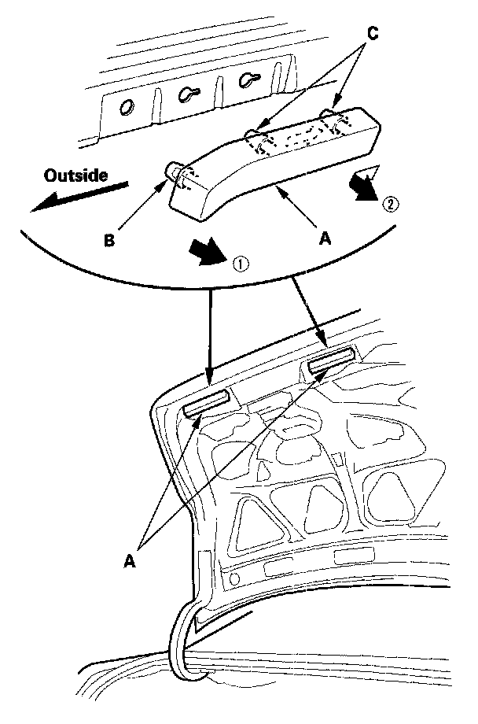
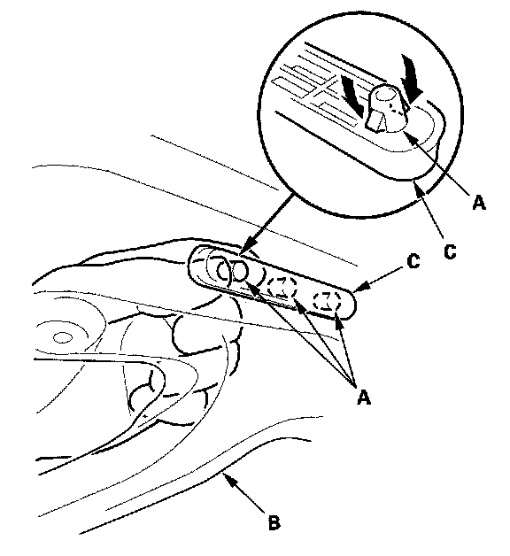

Trunk Lid Cushion Replacement
Trunk Lid Cushion Replacement2-door
NOTE: Put on gloves to protect your hands.

1. Remove the trunk lid cushions (A).
1. Pull back the outside of the trunk lid cushion to release the outside hook (B).
2. Slide the trunk lid cushion to the outside, then release the hooks (C) to remove it.
2. Install the cushion in the reverse order of removal.
4-door
NOTE: Put on gloves to protect your hands.
1. If equipped, remove the trunk lid trim.

2. Detach the clips (A) by pushing it from the hole in the trunk lid (B), then remove the trunk lid cushion (C). Take care not to scratch the trunk lid.
3. Install the cushion in the reverse order of removal.